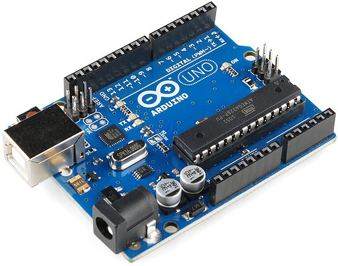
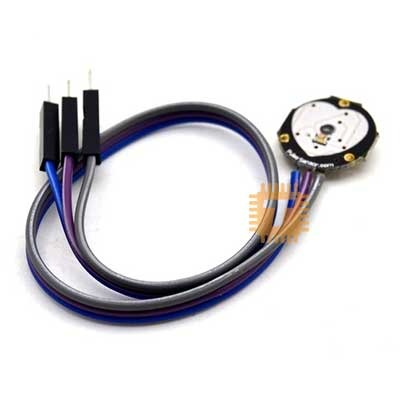
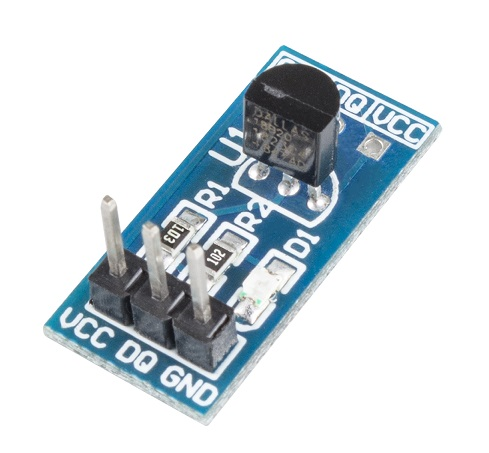
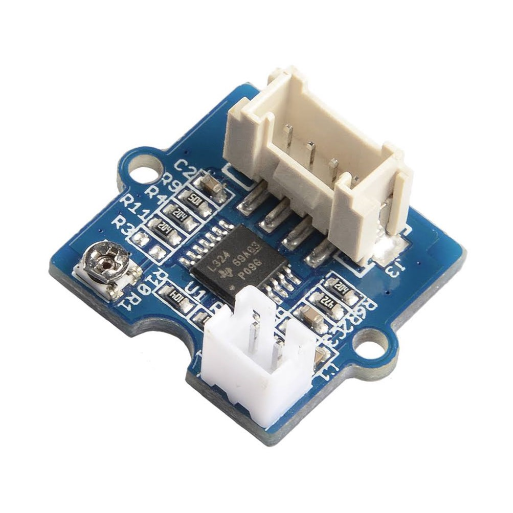

Hardware and Software Designs
Arduino UNO ATMega328P
Microcontroller is like brain of the system because it communicates with inputs and outputs and controls the entire operation of the system. Here we are using Arduino UNO ATMega328P as the Microcontroller. Reading longitude and latitude from GPS modem, reading health parameters of the patient, desplaying them on a user interfaces and send these data to the hospitals are the various functions of the Microcontroller.
ESP8266 Wifi Module

The ESP8266 WiFi Module is a self contained SOC with integrated TCP/IP protocol stack that can give any microcontroller access to your WiFi network. The ESP8266 is capable of either hosting an application or offloading all WiFi networking functions from another application processor.
GPS Modem (NEO6MV2)

Main function of GPS modem is provide longitude and latitude of the ambulance to the Microcontroller. It receives data from satellite and transfer them into Microcontroller through serial communication. As ambulance moves along the way from patient’s home to hospital, the co- ordinates of ambulance location will change and these variations are given to Microcontroller.
Pulse Rate Heartbeat Sensor Module
Heart beat sensor consits of LDR and RED LED. if someone placed his/her finger between these two components red light will be reflected from finger to LDR. Because of blood pumping light intensity is fluctuate time to time. Heart beat sensor used in this project works on the above principle. It gives out high pulses with every heartbeat.
Temperature Sensor Module
DS18B20 digital temperature sensor works on a single bus and it has 64-bit ROM to store the serial number of component. It can get quite a few DS18B20 sensors connected to a single bus in parallel. With a microcontroller, you can control so many DS18B20 sensors that are distributed around a wide range.
Blood Pressure Sensor -GSR V1.1
The sensing system reads the cuff pressure (CP) and extracts the pulses for analysis and determination of systolic and diastolic pressure.